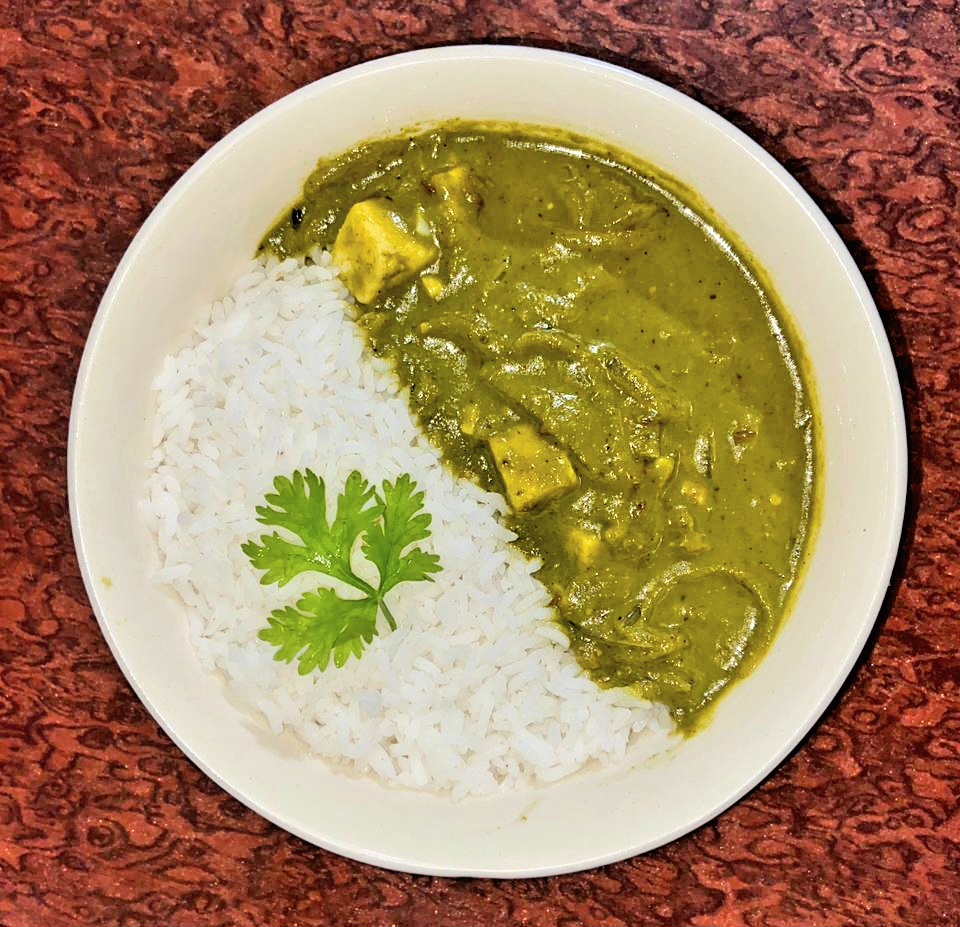

Palak Paneer

Journal Notes
- Prepared: 29 May 2026
- Cuisine: Indian 🇮🇳
- Difficulty: 🔥🔥🔥💧💧
- Servings: 2
🍜 Why I Made It
It was the only dish where I didn't mind the spinach. Well, sometimes I did when the flavor was intense, but it was rarely the case ordering it from restaurants. Now that I cook, I wanted to make it healthily at home and enjoy it.
🛒 Ingredients
Main
- 250 g paneer cubes
- 250–300 g spinach (palak)
Aromatics
- 1 medium onion, sliced
- 5–6 garlic cloves
- 1 inch ginger
- 1 green chili
Flavor Balancers
- 1 medium tomato
- 3 tbsp milk
- 1 tsp kasuri methi
- ½ tsp sugar or honey
- 1 tbsp butter
- 6–8 cashews
Spices
- ½ tsp cumin seeds
- ½ tsp coriander powder
- ¼ tsp garam masala
- ¼ tsp black pepper
- Salt to taste
👨🍳 Method
-
Blanch the Spinach
Add spinach to boiling water for only 45–60 seconds and immediately transfer to ice-cold water. -
Make the Smooth Green Base
- Blend blanched spinach, tomato, cashews, and green chili together.
- If needed, add a little water.
-
Build Flavor
- Heat 1 tbsp butter and a little oil in a pan.
- Throw in cumin seeds and onions.
- Cook the onions until lightly golden.
- Add ginger and garlic. Cook for 1 minute until fragrant.
- Now add coriander powder and black pepper.
-
Add the Spinach Puree
- Add the puree and simmer only for 3-4 minutes.
- Add salt, sugar/honey, kasuri methi, and cream/milk.
-
Paneer goes in last
- Add paneer cubes.
- Simmer gently for not more than 2 minutes.
- Finish with lemon juice.
✅ What Went Well?
Spinach taste wasn't too strong, which was a great success.
It is surprisingly comforting. Tastes unusual, but in a good way. You
want to keep eating more.
🔧 What I'd Change Next Time
I don't think I'd change anything. This was one of those dishes that worked out so well on the very first attempt.
🤔 Would I Make It Again?
Certainly.